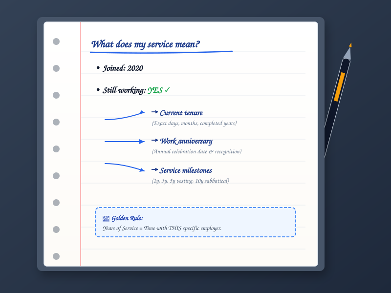
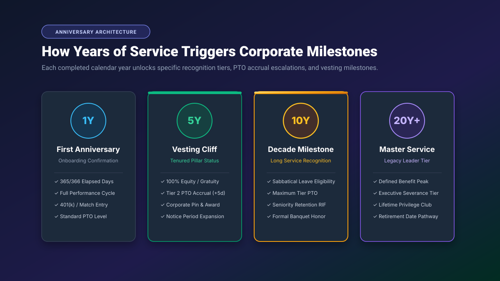
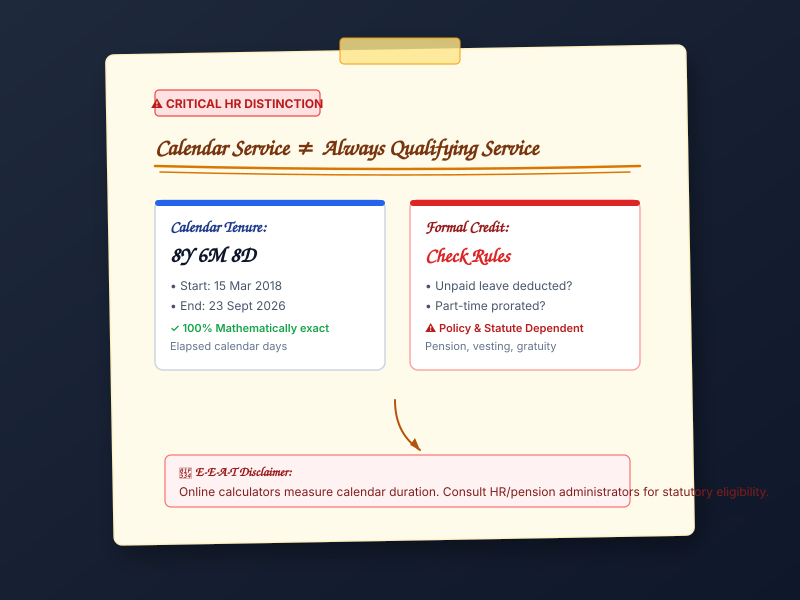

Years of Service Meaning in Simple Terms
At its most fundamental level, years of service describes how long you have worked for a specific employer. It is the calendar duration connecting the day you began your role to a chosen evaluation point.
Consider an everyday example: suppose an employee officially joined a technology firm on April 10, 2018 and remains actively employed today. If their tenure is evaluated on April 10, 2026, their completed years of service is exactly:
In short: Years of service = employment duration with an organization. When you need to determine the arithmetic steps, borrowing rules, and exact day formulas behind this number, see our companion tutorial on how to calculate years of service in years, months, and days.
Does “Years of Service” Always Mean the Same Thing?
No. This is one of the most critical nuances in modern human resources and employment administration. Years of service carries two distinctly different meanings depending on whether you are looking at calendar time or statutory legal credit:
- Everyday / Calendar Meaning: The elapsed calendar duration between your hire date and your reference date (e.g., 8 years, 6 months, and 8 days). This measures chronological time elapsed on the Gregorian calendar.
- Formal / Credited Meaning (Qualifying Service): The amount of service that an employer's pension committee, provident fund, collective bargaining agreement, or statutory authority officially recognizes for benefit calculations.
These two values do not always match. For instance, an employee may have 10 years of unbroken calendar employment, but if they took 6 months of unpaid leave or worked part-time during two of those years, a corporate pension system might only recognize 9.2 years of credited qualifying service.
Age Calculator Lab calculates date-based calendar service duration. It does not automatically determine legal, pension, gratuity, statutory vesting, or contractual benefit eligibility. Always verify your formal credited service with your corporate HR department or plan administrator.
Is Years of Service the Same as Employee Tenure?
In everyday workplace conversations, the terms years of service, employee tenure, length of service, and years of employment are used almost interchangeably. However, subtle professional distinctions exist:
| Term | Primary Common Meaning | Context Where Used |
|---|---|---|
| Years of Service | Total time served with a specific employer or service arrangement. | Service awards, corporate milestones, PTO tier brackets. |
| Employment Tenure | The continuous period an employee remains employed with an organization. | Workforce analytics, turnover reports, academic permanence. |
| Length of Service | The chronological calendar duration from hire date to cutoff. | HR contracts, severance schedules, notice periods. |
| Years of Employment | General elapsed employment time with one or more companies. | Resumes, CV summaries, employment background checks. |
| Qualifying Service | Service formally recognized under a specific legal or pension plan rule. | Statutory gratuity, ERISA pension vesting, government retirement. |
How Is Years of Service Measured?
Depending on whether you are preparing an award certificate, filing a tax form, calculating payroll accrual rates, or analyzing actuarial data, years of service can be represented in five standard formats:
- Years, Months & Days (e.g., 8 Years, 6 Months, 8 Days): The primary and most intuitive human-readable representation. It tracks completed calendar anniversaries, completed post-anniversary months, and remaining days.
- Completed Whole Years (e.g., 8 Years): Truncates all remaining months and days. Commonly required for corporate milestone awards (such as 5-year or 10-year pins) or retirement vesting thresholds where partial years do not advance the tier.
- Total Completed Months (e.g., 102 Months): Multiplies completed years by 12 and adds completed months. Frequently used in statutory severance matrices and credit-accrual schedules.
- Decimal Years (e.g., 8.52 Years): Expresses service as a floating-point number. Essential for regression analysis, executive compensation formulas, and statistical reports, though it is an approximation rather than calendar-exact Y/M/D.
- Total Calendar Days (e.g., 3,114 Days): The absolute count of elapsed sunrises between the two dates. Useful for strict 90-day probationary windows or contractual day-count clauses.
Interactive Service Format Converter
Select a sample career duration below to see how the same employment period translates across all five measurement formats:
* Decimal years and total days depend on calendar leap-year cycles; calendar Y/M/D remains the official standard for personal tenure.

Years of Service vs. Years of Experience
One of the most frequent errors found on professional resumes, LinkedIn profiles, and job applications is confusing years of service with years of experience. While both express professional time, their scope is completely different:
- Years of Service: Measures the duration of employment with one specific organization. It resets to zero whenever you switch employers.
- Years of Experience: Measures your cumulative professional career across all employers, roles, and consulting engagements combined.
The Career Addition Example
Imagine a software architect with the following career history:
- Employer A (2018–2021): 3 Years of Service
- Employer B (2021–2026): 5 Years of Service
This individual has 8 Years of Total Professional Experience, but only 5 Years of Service with Employer B.
Years of Experience
Aggregates every position, freelancing engagement, and professional role across your entire career path.
Used on: Resumes, CVs, Seniority EvaluationsYears of Service
Restricted strictly to the active contractual tenure served within your current (or single former) company.
Used for: Vesting, PTO Accrual, Service AwardsWhat Date Starts Your Years of Service?
Calculating years of service requires establishing an undisputed start date. In practice, organizations use different milestones as the recognized commencement point:
- Official Start Date / Joining Date: The first day an employee reported to work or logged into company systems. This is the universal standard for day-to-day tenure and milestone celebrations.
- Service Commencement Date: The contractual effective date specified in an employment agreement, which may predate the physical first day at the desk.
- Probation Confirmation Date: Some legacy benefit plans only begin counting credited service once an initial 90-day or 6-month probationary period has been successfully passed.
- Rehire Date: For returning employees, the new start date often becomes the fresh baseline for continuous tenure unless bridging policies apply.
- Credited Prior-Service Date: In mergers and acquisitions, an agreed-upon adjusted date that credits service completed at an acquired predecessor entity.
Expert Rule: For general calendar tracking, use your recognized first day of work. For statutory pension, gratuity, or vesting verification, always consult your official appointment letter or HR portal.
Years of Service for Current vs. Former Employees
The mathematical calculation of years of service adapts depending on whether employment is active, concluded, or projected into the future:
Current Employee
Start Date → Today's Date
An ongoing, dynamic duration that grows by one day each morning. Used to track current anniversary countdowns and next-tier milestones.
Former Employee
Start Date → Last Working Day
A static, locked duration. Evaluated from official appointment to termination, resignation, or retirement cutoff for final settlement and resume verification.
Future Career Planning
Start Date → Target Future Date
A projected service duration. Enables employees to determine exactly how many years of service they will achieve on a specific future retirement or vesting date.
Calculate Service to Any Custom Date →
How Years of Service Relates to Your Work Anniversary
Your work anniversary is the annual recurring calendar date that commemorates your first day of employment. Years of service and work anniversaries are fundamentally coupled:
- Anniversary Date: Remains static on the calendar (e.g., if you joined on May 20, your anniversary is celebrated every May 20).
- Years of Service: The integer number of completed years associated with that milestone (e.g., your 1st anniversary in 2021, 5th anniversary in 2025, and 10th anniversary in 2030).
The February 29 Leap-Day Nuance: For employees hired on February 29 during a leap year, standard HR convention recognizes their non-leap-year anniversary on March 1 (the 366th day following the start), while some corporate recognition portals mark it on February 28. Neither convention alters the completed year count.
Sample Career Anniversary Profile
Start Date: May 20, 2020 • Reference: September 2026
What Are Years-of-Service Milestones?
Organizations globally structure employee appreciation, compensation upgrades, and tenure awards around standard career benchmarks. Below are the most common planning milestones:
* Note: These are standard corporate recognition benchmarks, not statutory employment-law thresholds.

Does a Break in Employment Affect Years of Service?
A career break, sabbatical, leave of absence, or resignation followed by rehire introduces the distinction between continuous service and aggregate service:
Example: The Rehire Timeline
Period 1: 2015 — 2019 (4 Years) • Break: 2019 — 2021 (2 Years) • Period 2: 2021 — 2026 (5 Years)
- Total Employment History: 4 Years + 5 Years = 9 Years of service rendered to the organization across your life.
- Current Continuous Tenure: 5 Years (measured from the rehire date in 2021).
Whether past service bridges across a separation depends entirely on employer policy or statutory rules (such as statutory rehire periods or military leave protections).
Do Leap Years Change Years of Service?
A standard calendar year contains 365 days, whereas a leap year (such as 2020, 2024, or 2028) contains 366 days.
Because leap years insert an extra calendar day, dividing total elapsed days by 365 causes decimal representations to drift slightly. However, under true calendar-anniversary decomposition, leap years do not change your completed years: if you joined on March 15, your work anniversary is March 15 every year without exception. For the mathematical breakdown, read our guide on how to calculate years of service accurately.
What Is Qualifying Service?
Qualifying service (often termed creditable service or pensionable service) is the duration of employment that an employer, retirement board, pension fund, or statutory law officially recognizes for granting a specific benefit.
Qualifying service frequently deviates from calendar tenure because formal rules may:
- Exclude Unpaid Leaves: Long-term leaves of absence without pay (such as unapproved leave or extended sabbaticals) are often subtracted from qualifying service.
- Prorate Part-Time Schedules: Working 20 hours per week for 2 calendar years may only count as 1.0 year of full-time equivalent (FTE) qualifying service.
- Require Minimum Hours: Under plans like U.S. ERISA 401(k) vesting, a year of service is defined as working at least 1,000 hours during an annual computation period.
- Statutory Gratuity Minimums: In jurisdictions like India and the UAE, statutory end-of-service gratuity mandates at least 5 years of continuous service before vesting occurs.

Why Do People Calculate Years of Service?
Accurate knowledge of your years of service impacts six major areas of professional life:
1. Employment Tenure
Confirming exactly how long you have worked with your current organization for personal records and professional bios.
2. Work Anniversary
Identifying upcoming calendar anniversary dates to prepare for personal or departmental celebrations.
3. HR Reviews & Seniority
Evaluating service brackets for annual appraisals, internal promotions, and company-wide seniority rosters.
4. Service Awards
Tracking progress toward recognized milestones such as 5, 10, or 20-year corporate long-service awards.
5. Career Documentation
Entering exact tenure dates on resumes, employment visa applications, and background screening forms.
6. Retirement Planning
Estimating calendar service duration projected to a future retirement or early exit date.
Want to Calculate Your Exact Years of Service?
Enter your official start date and any reference date to see your exact service duration broken down into calendar years, months, and days, total months, and decimal years.
Calculate My Years of Service Now →Common Years-of-Service Mistakes to Avoid
Reporting total lifetime career experience on a form that specifically asks for years of service with your current employer.
Calculating tenure using the current date rather than your official last working day for a former position.
Using raw day division for milestone awards, which drifts out of alignment due to 366-day leap years and variable month lengths.
Assuming past employment automatically merges into continuous service after a multi-year resignation gap without verifying bridging rules.
Assuming that 10 calendar years automatically grants 10 years of pension credit without accounting for unpaid leaves or part-time schedules.
Believing every employer defines commencement, probation, and anniversary milestones under the identical policy.
Years of Service FAQs
What does years of service mean?
Years of service refers to the continuous or aggregate length of time an employee has been employed by an organization or providing service under an employment contract. It is typically measured from an official start date to the current date or termination date, expressed in years, months, and days.
What is the meaning of length of service?
Length of service is an interchangeable HR term for years of service or employment duration. It measures the total calendar span an individual has spent working for a specific organization.
Is years of service the same as tenure?
In general workplace contexts, years of service and employee tenure are used synonymously. Both describe how long you have held employment with a particular organization. However, in academic or judicial settings, "tenure" can also refer to permanent job security status.
Is years of service the same as years of experience?
No. Years of service measures your time spent with one specific employer. In contrast, years of experience represents your cumulative professional career across all jobs, roles, and organizations combined.
How are years of service calculated?
Years of service are calculated through calendar decomposition: first counting completed full calendar years between start and reference dates, then completed remaining calendar months, and finally the leftover elapsed days.
What date counts as the start of service?
The start date depends on the context. For ordinary calendar tracking, it is your first day of work. For formal HR, retirement, or vesting purposes, it is the official appointment date, service commencement date, or credited rehire date documented in company records.
How do I calculate my years of employment?
Identify your official joining date and enter it alongside today's date (or your final working date) into our Years of Service Calculator to get your exact years, months, days, total months, and decimal years instantly.
How do I find my work anniversary?
Your work anniversary occurs annually on the same calendar month and day as your original start date. For example, if you joined on May 20, 2020, your anniversary is May 20 of every subsequent year.
Does a break in employment affect years of service?
Yes. A break in employment usually resets your continuous service clock to your rehire date. However, an employer or pension plan may offer bridging rules that combine separate service periods into total employment history.
Do leap years affect years of service?
Leap years contain 366 days instead of 365. Under exact calendar decomposition, your annual work anniversary always falls on the correct calendar day regardless of leap years, avoiding the artificial 1-to-2 day drift caused by dividing days by 365.
Is years of service the same as qualifying service?
No. Years of service measures elapsed calendar time. Qualifying service (or credited service) is the specific duration officially recognized by pension schemes, vesting plans, or statutory gratuity rules, which may exclude unpaid leaves or adjust for part-time schedules.
Can years of service be expressed as decimal years?
Yes. Decimal years express service as a floating-point number (e.g., 8.52 years). While helpful for statistical reports and payroll accrual rates, calendar years, months, and days remain the standard format for milestone recognition.
How can I calculate my exact years, months and days of service?
You can use the free Years of Service Calculator on Age Calculator Lab, which instantly decomposes any two employment dates into completed calendar years, months, and days with zero leap-year distortion.
Related Tools & Practical Guides
Years of Service Calculator
Calculate exact employee tenure, completed years, months, days, and milestone countdowns.
Calculation GuideHow to Calculate Years of Service
Step-by-step arithmetic tutorial on calendar decomposition, day borrowing, and Excel formulas.
Tenure GuideHow to Calculate Employee Tenure
Measure employee tenure from start date to current, termination, or future planning dates.
Anniversary GuideHow to Calculate Your Work Anniversary
Find your next anniversary date, countdown days, and plan for 1, 5, 10, and 20-year career milestones.
Date LabChronological Age Calculator
Determine exact chronological age in calendar years, months, and days from birth date.